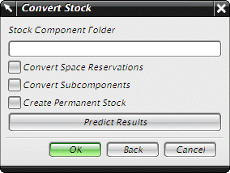

默认情况下，所有的型材与护套型材都将在传统模式下创建，亦即，在工作部件中创建扫掠特征。
转换为组件型材命令将把管线中的型材特征转换为装配中的组件对象。

转换空间预留
将在您点击确定时对装配树下工作部件的所有根级空间预留型材进行转换。
转换子组件
将在您点击确定时对装配树下工作部件的所有根级组件进行转换。
创建永久型材
通过调用重命名组件功能来使转换的同时对所有生成的型材组件重命名。这将在所有组件都创建之后进行。
预测结果
打开信息窗口，以显示 NX 将要创建的组件类型与数量。
一旦型材转换为组件，就不能再转换回传统型材模式，同时装配也不能包含传统型材的组件型材的组合。因此推荐您清除型材为组件选项，直到您完成您的管线装配。装配完成后，您可以将所有型材转换为组件对象，并在材料清单中列出它们。
|
应用模块 |
所有管线布置应用模块 |
|
菜单 |
编辑→管线布置型材→转换为组件型材 |
|
首选项 |
首选项→管线布置→型材选项卡→型材为组件复选框 |
|
用户默认设置 |
文件→实用工具→用户默认设置→管线布置→常规→型材选项卡→型材为组件复选框 |